|
Jongin Lim I'm a Staff Researcher at Samsung AI Center (formerly SAIT AI Research Center), developing robust and efficient machine learning models tailored for industrial applications. My work has focused on AI-driven automation in manufacturing, spanning diverse modalities including vision, language, structured data (e.g., graph, tabular), and time-series domains. I received my Ph.D. (through an integrated M.S./Ph.D. program) in Electrical and Computer Engineering from Seoul National University in 2022, under the supervision of Prof. Jin Young Choi. I received my B.S. in Electrical and Computer Engineering from Seoul National University in 2016. Email / CV / Google Scholar / Github |

|
News
|
ResearchMy research focuses on developing generalizable and transferable ML models for real-world applications. Recently, I have worked on improving model robustness under data imbalance (e.g., IB, PRIME), distribution shifts (e.g., BiasAdv), and noisy labels (e.g., SLC), but I am open to exploring a broader range of topics. I have also investigated deep metric learning (e.g., HIST), graph-based learning (e.g., CAD), and realistic human motion generation (e.g., PMnet). First-author papers are highlighted. |
|
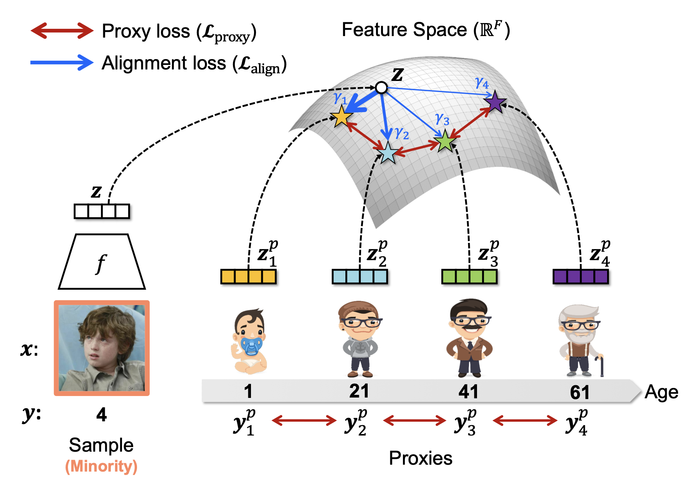 |
PRIME: Deep Imbalanced Regression with Proxies
Jongin Lim, Sucheol Lee, Daeho Um, Sung-Un Park, Jinwoo Shin ICML, 2025 bibtex / code We propose Proxy-based Representation learning for IMbalanced rEgression (PRIME), a novel framework that leverages learnable proxies to construct a balanced and well-ordered feature space for imbalanced regression. |
|
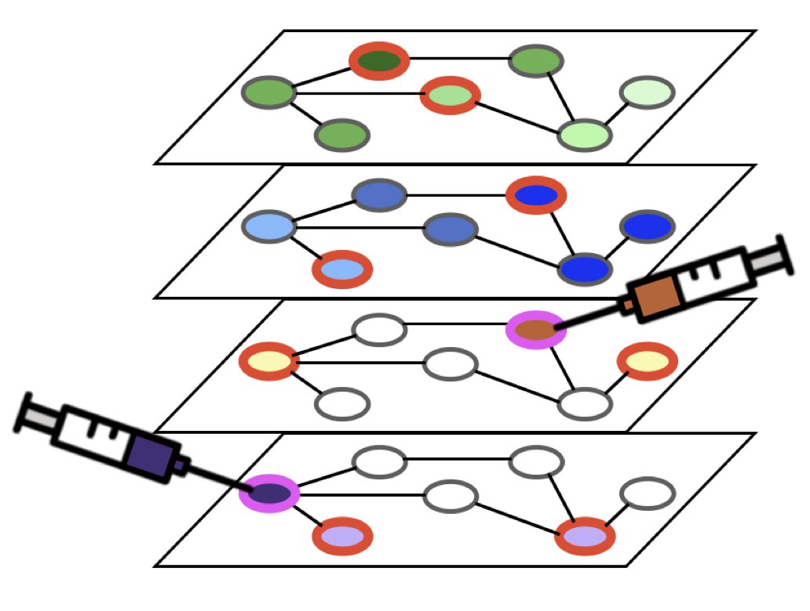 |
Propagate and Inject: Revisiting Propagation-Based Feature Imputation for Graphs with Partially Observed Features
Daeho Um, Sunoh Kim, Jiwoong Park, Jongin Lim, Seong Jin Ahn, Seulki Park ICML, 2025 bibtex / code We address learning tasks on graphs with missing features, enhancing the applicability of graph neural networks to real-world graph-structured data. |
|
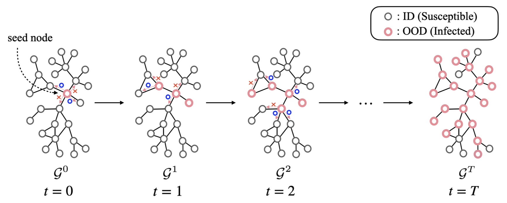 |
Spreading Out-of-Distribution Detection on Graphs
Daeho Um, Jongin Lim, Sunoh Kim, Yuneil Yeo, Yoonho Jung ICLR, 2025 bibtex We introduce a new challenging task to model the interactions of OOD nodes in a graph, termed spreading OOD detection, where a newly emerged OOD node spreads its property to neighboring nodes. We present a realistic benchmark setup with a new dataset and propose a novel aggregation scheme for the new task. |
|
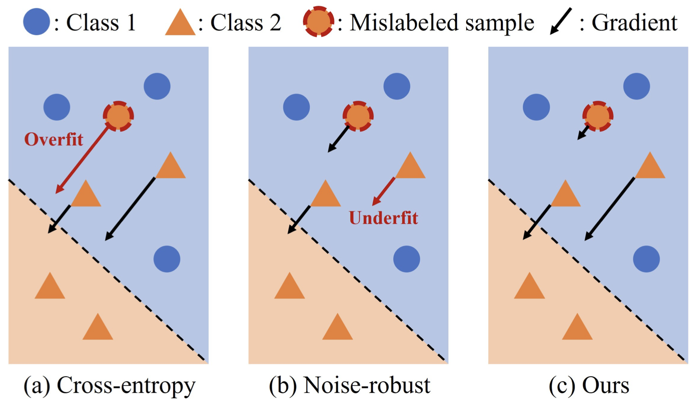 |
Sample-wise Label Confidence Incorporation for Learning with Noisy Labels
Chanho Ahn, Kikyung Kim, Ji-won Baek, Jongin Lim, Seungju Han ICCV, 2023 bibtex / video We propose a novel learning framework that selectively suppresses noisy samples while avoiding underfitting clean data. Our framework incorporates label confidence as a measure of label noise, enabling the network model to prioritize the training of samples deemed to be noise-free. |
|
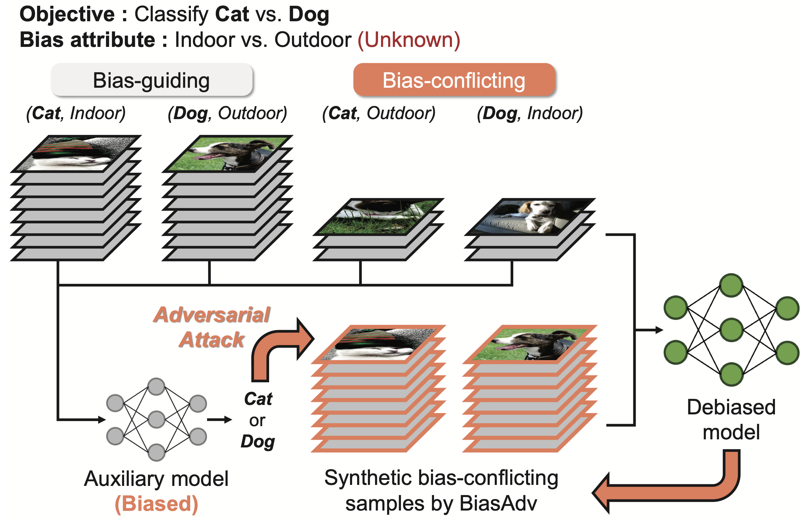 |
BiasAdv: Bias-Adversarial Augmentation for Model Debiasing
Jongin Lim, Youngdong Kim, Byungjai Kim, Chanho Ahn, Jinwoo Shin, Eunho Yang, Seungju Han CVPR, 2023 bibtex / video We propose a novel data augmentation approach termed Bias-Adversarial augmentation (BiasAdv) that supplements bias-conflicting samples with adversarial images. Our key idea is that an adversarial attack on a biased model that makes decisions based on spurious correlations may generate synthetic bias-conflicting samples, which can then be used as augmented training data for learning a debiased model. |
|
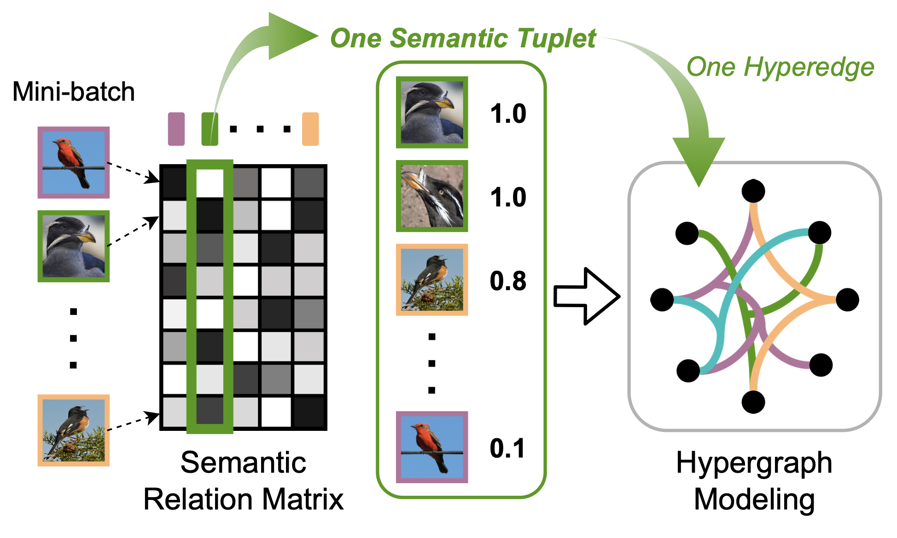 |
Hypergraph-Induced Semantic Tuplet Loss for Deep Metric Learning
Jongin Lim, Sangdoo Yun, Seulki Park, Jin young Choi CVPR, 2022 bibtex / code We formulate deep metric learning as a hypergraph node classification problem to capture multilateral relationship by semantic tuplets beyond previous pairwise relationship-based methods. |
|
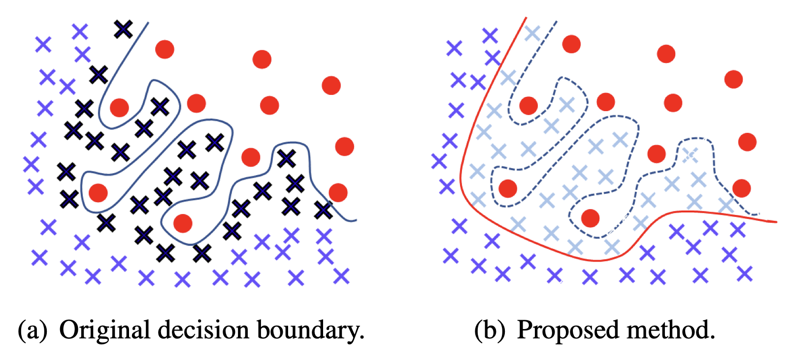 |
Influence-balanced Loss for Imbalanced Visual Classification
Seulki Park, Jongin Lim, Younghan Jeon, Jin young Choi ICCV, 2021 arXiv / bibtex / code / video We propose a new loss function for imbalanced visual classification, which alleviates the influence of samples that cause an overfitted decision boundary. |
|
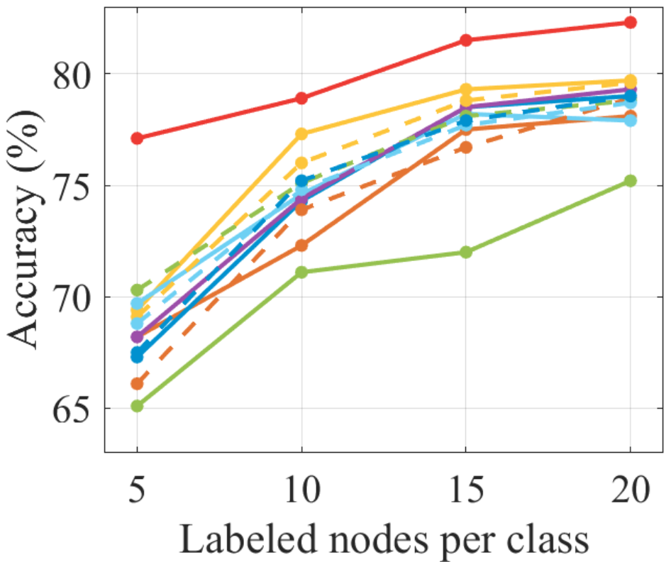 |
Class-Attentive Diffusion Network for Semi-Supervised Classification
Jongin Lim, Daeho Um, Hyung Jin Chang, Dae Ung Jo, Jin young Choi AAAI, 2021 arXiv / bibtex / code We propose a novel stochastic process, called Class-Attentive Diffusion (CAD), that strengthens attention to intra-class nodes and attenuates attention to inter-class nodes. In contrast to the previous diffusion methods, CAD considers both the node features and the graph structure with the design of our class-attentive transition matrix that utilizes a classifier. |
|
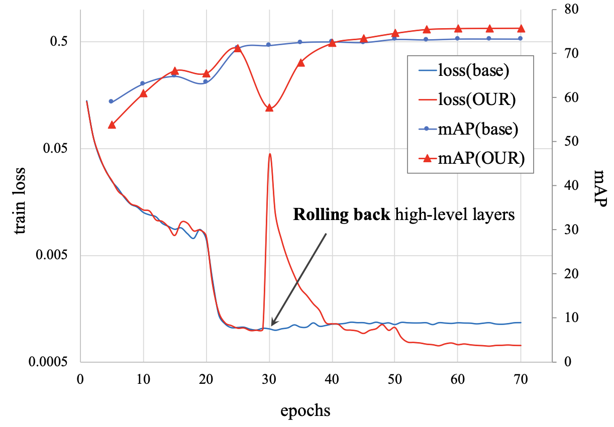 |
Backbone Cannot Be Trained at Once: Rolling Back to Pre-trained Network for Person Re-identification
Youngmin Ro, Jongwon Choi, Dae Ung Jo, Byeongho Heo, Jongin Lim, Jin young Choi AAAI, 2019 arXiv / bibtex / code We propose a novel fine-tuning strategy that allows low-level layers to be sufficiently trained by rolling back the weights of high-level layers to their initial pre-trained weights. Our strategy alleviates the problem of gradient vanishing in low-level layers. |
|
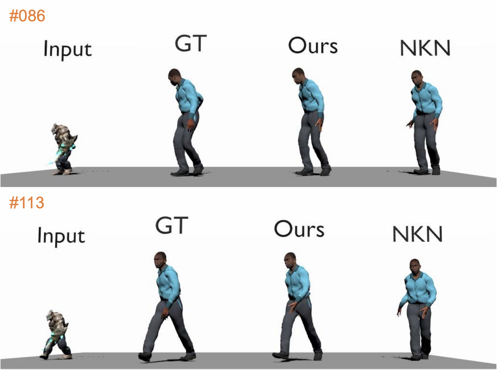 |
PMnet: Learning of Disentangled Pose and Movement for Unsupervised Motion Retargeting
Jongin Lim, Hyung Jin Chang, Jin young Choi BMVC, 2019 bibtex / code / video We propose a deep learning framework for unsupervised motion retargeting. In contrast to the existing method, we decouple the motion retargeting process into two parts that explicitly learn poses and movements of a character, reducing the motion retargeting error (average joint position error) from 7.68 (sota) to 1.95 (ours). |
|
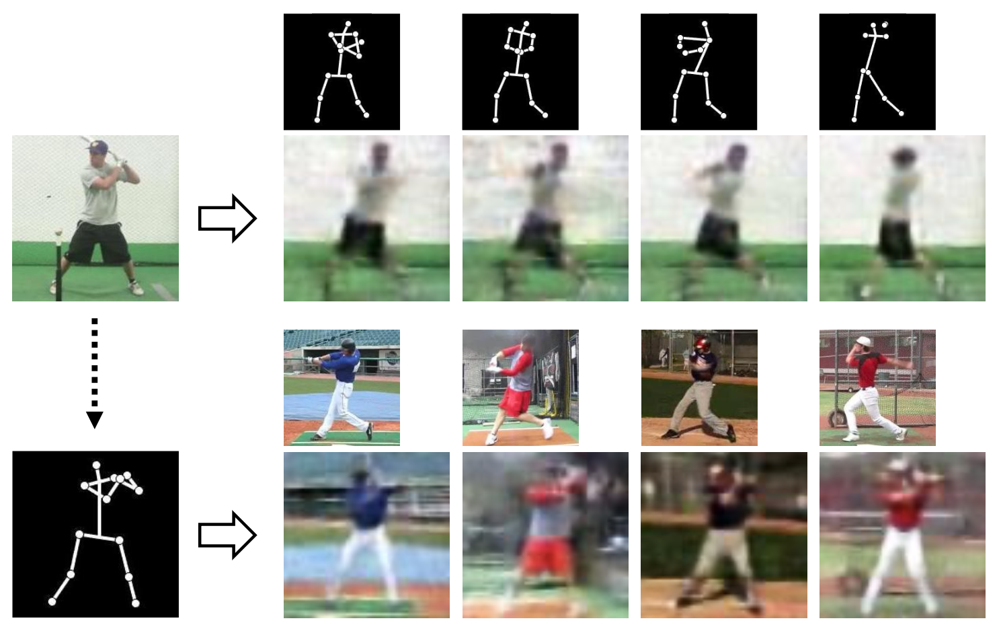 |
Pose Transforming Network: Learning to Disentangle Human Posture in Variational Auto-encoded Latent Space
Jongin Lim, Youngjoon Yoo, Byeongho Heo, Jin young Choi Pattern Recognition Letters, 2018 bibtex We propose a novel deep conditional generative model for human pose transforms. To generate the desired pose-transformed images from a single image, a variational inference model is formulated to disentangle human posture semantics from image identity (human personality, background etc.) in variational auto-encoded latent space. |
|
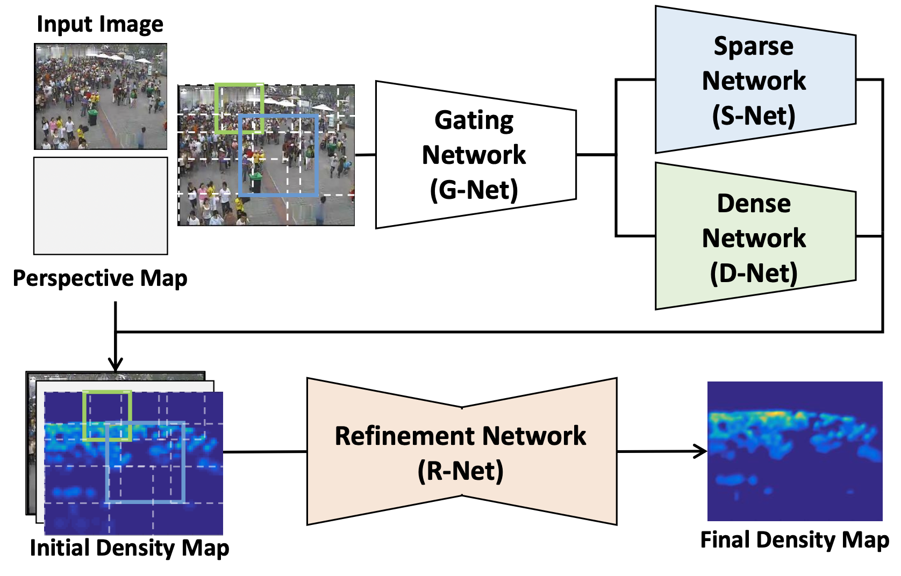 |
Selective Ensemble Network for Accurate Crowd Density Estimation
Jiyeoup Jeong Hawook Jeong, Jongin Lim, Jongwon Choi, Sangdoo Yun, Jin young Choi ICPR, 2018 bibtex We propose a selective ensemble deep network architecture for crowd density estimation and people counting. In contrast to existing deep network-based methods, the proposed method incorporates two sub-networks for local density estimation: one to learn sparse density regions and one to learn dense density regions. |
|
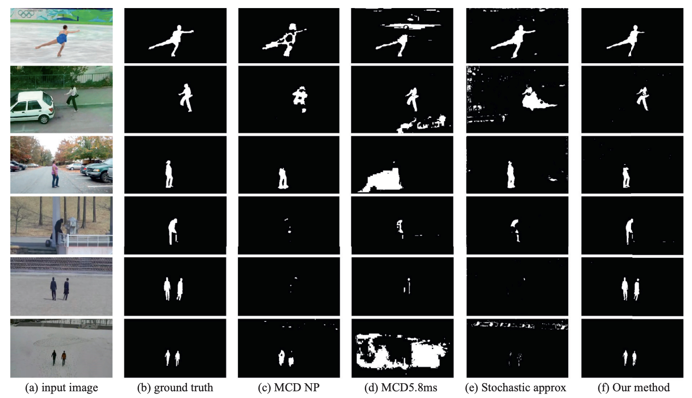 |
Scene Conditional Background Update for Moving Object Detection in a Moving Camera
Kimin Yun Jongin Lim, Jin young Choi Pattern Recognition Letters, 2017 bibtex / code / video We propose a moving object detection algorithm adapting to various scene changes in a moving camera. Our method adapts itself to the dynamic scene changes and outperforms the state-of-the art methods. |
|
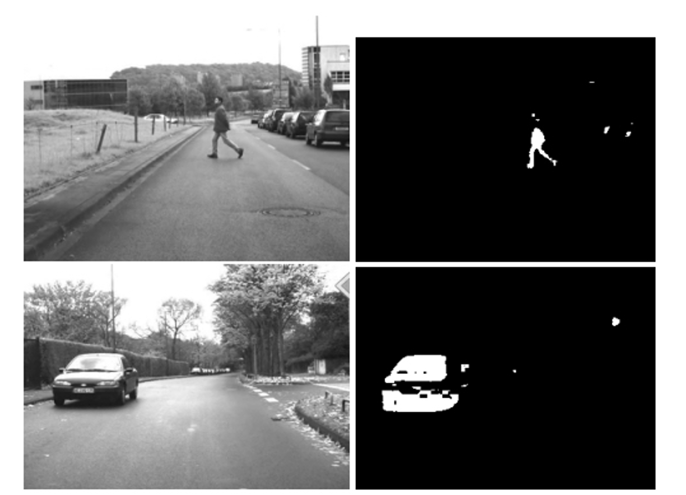 |
Attention-Inspired Moving Object Detection in Monocular Dashcam Videos
Kimin Yun Jongin Lim, Sangdoo Yun, Soo Wan Kim, Jin young Choi ICPR, 2016 bibtex We propose a moving object detection algorithm for a monocular dashcam mounted on a vehicle. To deal with dynamic changes of the scene from the dashcam, we propose a new scheme inspired by human-attention inclination for change detection. |
Patents |
Method and Device with Image-Difference Reduction Preprocessing [Google Patent]
- 🇰🇷 KR20250020150A, South Korea (Publication: 2025-02-11)
- 🇺🇸 US20250045884A1, United States (Publication: 2025-02-06)
- 🇹🇼 TW202507651A, Taiwan (Publication: 2025-02-16)
- 🇪🇺 EP4502936A3, European Patent Office (Publication: 2025-05-14)
- 🇨🇳 CN119444583A, China (Publication: 2025-02-14)
Method and Electronic Device with Adversarial Data Augmentation [Google Patent]
- 🇺🇸 US20240152764A1, United States (Publication: 2024-05-09)
- 🇯🇵 JP2024066469A, Japan (Publication: 2024-05-15)
- 🇪🇺 EP4365777A1, European Patent Office (Publication: 2024-05-08)
Method and Device with Defect Detection [Google Patent]
- 🇰🇷 KR20240064412A, South Korea (Publication: 2024-05-13)
- 🇺🇸 US20240153070A1, United States (Publication: 2024-05-09)
- 🇨🇳 CN117994200A, China (Publication: 2024-05-07)
- 🇪🇺 EP4365834A1, European Patent Office (Publication: 2024-05-08)
- 🇯🇵 JP2024068105A, Japan (Publication: 2024-05-17)
Talks
|
Honors & Awards
|
|
Feel free to steal this website's source code. Do not scrape the HTML from this page itself, as it includes analytics tags that you do not want on your own website — use the github code instead. Also, consider using Leonid Keselman's Jekyll fork of this page. |